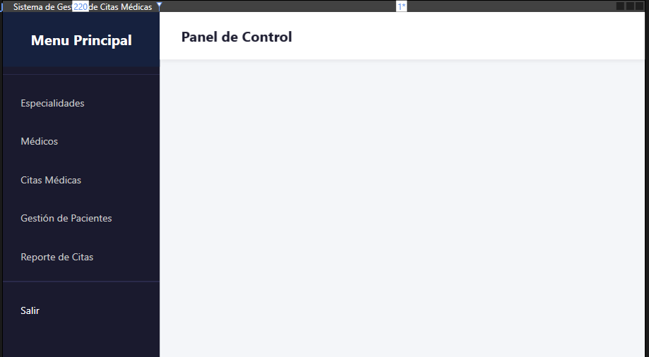
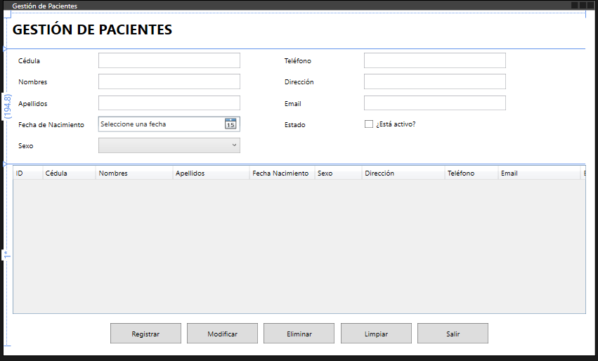
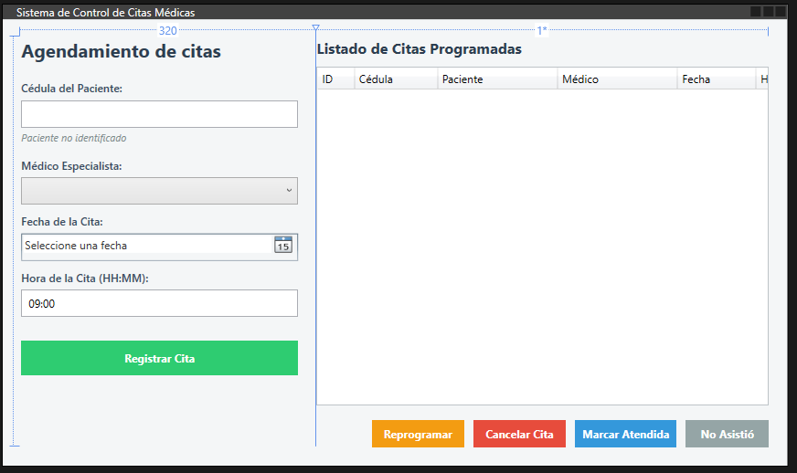
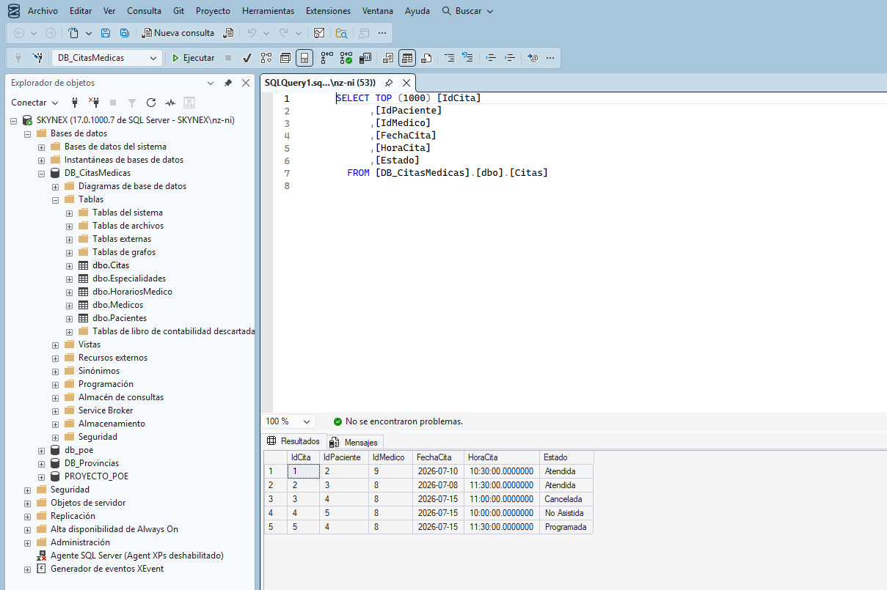

Sobre mí
Estudiante de Ingenieria de Software
Contexto - Descripción de proyectos
Durante mi carrera de Ingenieria de Software, he tenido la oportunidad de trabajar en diversos proyectos que me han permitido desarrollar mis habilidades en programación y resolución de problemas. El ultimo proyecto que realice fue acerca de un sistema de agendamientos de citas medicas, el cual fue desarrollado en C# con una base de datos en SQLServer.
Desarrollo
En el desarrollo de este proyecto, me enfoqué en la creación de una interfaz de usuario intuitiva y funcional, así como en la implementación de algoritmos eficientes para la gestión de citas. Utilicé patrones de diseño para asegurar que el código fuera mantenible y escalable.
Aprendizaje
A través de este proyecto, aprendí a trabajar en equipo y a gestionar un proyecto de software desde su concepción hasta su implementación. También mejoré mis habilidades en la resolución de problemas y en la comunicación con los compañeros de equipo.
Interés
- Desarrollo web
- Datos
- Aprender HTML
- Crear proyectos web
Si puedes imaginarlo, puedes programarlo
Herramientas y actividades del proyecto
Herramientas
- Visual Studio
- SQL Server
- GitHub
- Discord
Pasos realizados
- Revisé las instrucciones del proyecto
- Desarrollo de la lógica del negocio
- Creacion de la Base de Datos
- Desarrollo de la interfaz de usuario
- Pruebas y depuración del sistema
Registro de actividades del proyecto
| Actividad | Tecnología | Observación | Estado |
|---|---|---|---|
| Desarrollo de la lógica del negocio | C# | Se implementaron las funciones principales del sistema | Completado |
| Creación de la Base de Datos | SQL Server | Se diseñó y creó la base de datos para almacenar la información del sistema | Completado |
| Desarrollo de la interfaz de usuario | C# (Windows Forms) | Se diseñó y desarrolló la interfaz de usuario para interactuar con el sistema | Completado |
| Pruebas y depuración del sistema | C# | Se realizaron pruebas para identificar y corregir errores en el sistema | Completado |
Imágenes del proyecto
Captura de pantalla de la interfaz de usuario

Captura de pantalla de la sección de gestión de pacientes

Captura de pantalla de la sección de gestión de citas

Captura de pantalla de la Base de Datos
